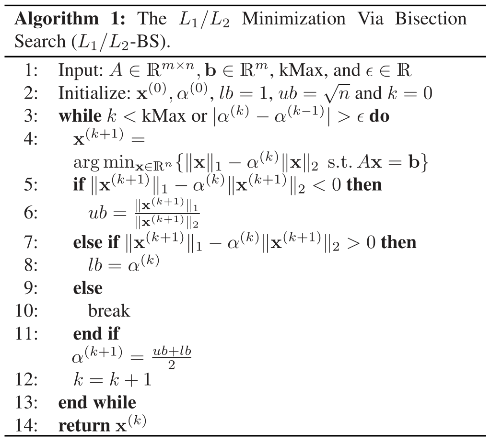
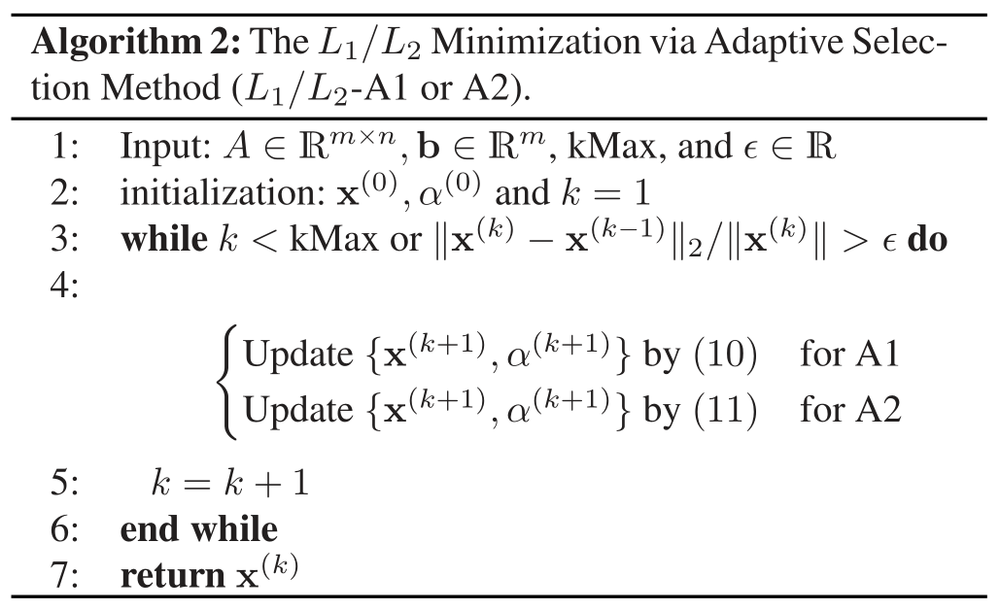

写在前面 介绍L 1 / L 2 L_1/L_2 L 1 / L 2 ℓ 1 − ℓ 2 \ell_1-\ell_2 ℓ 1 − ℓ 2
优化模型 L 0 L_0 L 0 min x ∈ R n ∥ x ∥ 0 s.t. A x = b \min_{\mathbf x \in \mathbb R^n} \|\mathbf x\|_0 \quad \text{s.t.} \quad A \mathbf x = \mathbf b
x ∈ R n min ∥ x ∥ 0 s.t. A x = b
NP 难问题
贪婪算法(当n n n )
正交匹配追踪(OMP) 正交最小二乘(OLS) 采样匹配追踪(CoSaMp) 近似算法()
凸松弛：L 1 L_1 L 1 L 0 L_0 L 0 非凸松弛：多种改进 比率优化问题L 1 L 2 \frac{L_1}{L_2} L 2 L 1 min x ∈ R n ∥ x ∥ 1 ∥ x ∥ 2 s.t. A x = b \min_{\mathbf x \in \mathbb R^n} \frac{\|\mathbf x\|_1}{\|\mathbf x\|_2} \quad \text{s.t.} \quad A \mathbf x = \mathbf b
x ∈ R n min ∥ x ∥ 2 ∥ x ∥ 1 s.t. A x = b
尺度不变性 不含参数 非凸的稀疏度度量 使用ADMM算法求解 引入两个辅助变量，构造增广的拉格朗日函数
L ( x , y , z , v , w ) = ∥ z ∥ 1 ∥ y ∥ 2 + I ( A x − b ) + ρ 1 2 ∥ x − y + 1 ρ 1 v ∥ 2 2 + ρ 2 2 ∥ x − z + 1 ρ 2 w ∥ 2 2 \begin{aligned}
L(x,y,z,v,w) =& \frac{\|z\|_1}{\|y\|_2} + I(Ax-b) \\
&+ \frac{\rho_1}{2}\|x-y +\frac{1}{\rho_1}v\|_2^2 \\
&+ \frac{\rho_2}{2}\|x-z+\frac{1}{\rho_2}w\|_2^2
\end{aligned}
L ( x , y , z , v , w ) = ∥ y ∥ 2 ∥ z ∥ 1 + I ( A x − b ) + 2 ρ 1 ∥ x − y + ρ 1 1 v ∥ 2 2 + 2 ρ 2 ∥ x − z + ρ 2 1 w ∥ 2 2
其中I ( ⋅ ) I(\cdot) I ( ⋅ )
I ( t ) = { 0 , t = 0 + ∞ , otherwise I(t) = \begin{cases}
0, & t = 0 \\
+\infty, & \text{otherwise}
\end{cases}
I ( t ) = { 0 , + ∞ , t = 0 otherwise
混合优化问题L 1 − α L 2 L_1 - \alpha L_2 L 1 − α L 2 min x ∈ R n ∥ x ∥ 1 − α ∥ x ∥ 2 s.t. A x = b \min_{\mathbf x \in \mathbb R^n} \|\mathbf x\|_1 - \alpha \|\mathbf x\|_2 \quad \text{s.t.} \quad A \mathbf x = \mathbf b
x ∈ R n min ∥ x ∥ 1 − α ∥ x ∥ 2 s.t. A x = b
娄老师在这一问题上有很多成果，可以参考主页。
联系 下面的性质给出比率模型L 1 L 2 \frac{L_1}{L_2} L 2 L 1 L 1 − α L 2 L_1 - \alpha L_2 L 1 − α L 2
α ∗ = inf x { ∥ x ∥ 1 ∥ x ∥ 2 s.t. A x = b } T ( α ) = inf x { ∥ x ∥ 1 − α ∥ x ∥ 2 s.t. A x = b } \begin{aligned}
\alpha^* &= \inf_{\mathbf x} \left\{\frac{\|\mathbf x\|_1}{\|\mathbf x\|_2} \quad \text{s.t.} \quad A \mathbf x = \mathbf b \right\}\\
T(\alpha) &= \inf_{\mathbf x} \left\{\|\mathbf x\|_1 - \alpha \|\mathbf x\|_2 \quad \text{s.t.} \quad A \mathbf x = \mathbf b \right\}
\end{aligned}
α ∗ T ( α ) = x inf { ∥ x ∥ 2 ∥ x ∥ 1 s.t. A x = b } = x inf { ∥ x ∥ 1 − α ∥ x ∥ 2 s.t. A x = b }
则
若T ( α ) < 0 T(\alpha) < 0 T ( α ) < 0 α > α ∗ \alpha > \alpha^* α > α ∗ 若T ( α ) ≥ 0 T(\alpha) \geq 0 T ( α ) ≥ 0 α ≤ α ∗ \alpha \leq \alpha^* α ≤ α ∗ 若T ( α ) = 0 T(\alpha) = 0 T ( α ) = 0 α = α ∗ \alpha = \alpha^* α = α ∗ 这表明比率模型的最优值是T ( α ) T(\alpha) T ( α )
由向量范数的等价关系
∥ x ∥ 2 ≤ ∥ x ∥ 1 ≤ n ∥ x ∥ 2 , ∀ x ∈ R n \|\mathbf x\|_2 \leq \|\mathbf x\|_1 \leq \sqrt{n}\|\mathbf x\|_2,\quad\forall \mathbf x \in \mathbb R^n
∥ x ∥ 2 ≤ ∥ x ∥ 1 ≤ n ∥ x ∥ 2 , ∀ x ∈ R n
可以设置初始参数α ( 0 ) ∈ [ 1 , n ] \alpha^{(0)} \in [1,\sqrt n] α ( 0 ) ∈ [ 1 , n ] T ( α ( 0 ) ) T(\alpha^{(0)}) T ( α ( 0 ) )
若T ( α ) = 0 T(\alpha) = 0 T ( α ) = 0
若T ( α ) < 0 T(\alpha) < 0 T ( α ) < 0 α \alpha α [ α ( 0 ) , n ] [\alpha^{(0)},\sqrt n] [ α ( 0 ) , n ]
若T ( α ) ≥ 0 T(\alpha) \geq 0 T ( α ) ≥ 0 α \alpha α [ 1 , α ( 0 ) ] [1,\alpha^{(0)}] [ 1 , α ( 0 ) ] L 1 − ∥ x ( k + 1 ) ∥ 1 ∥ x ( k + 1 ) ∥ 2 L 2 L_1 - \frac{\|x^{(k+1)}\|_1}{\|x^{(k+1)}\|_2}L_2 L 1 − ∥ x ( k + 1 ) ∥ 2 ∥ x ( k + 1 ) ∥ 1 L 2 0 0 0 [ 1 , ∥ x ( k + 1 ) ∥ 1 ∥ x ( k + 1 ) ∥ 2 ] [1,\frac{\|x^{(k+1)}\|_1}{\|x^{(k+1)}\|_2}] [ 1 , ∥ x ( k + 1 ) ∥ 2 ∥ x ( k + 1 ) ∥ 1 ]
更新范围后，选择区间断点的均值作为参数α ( 1 ) \alpha^{(1)} α ( 1 )
凸函数之差算法 对于非凸函数f ( x ) f(x) f ( x ) g ( x ) , h ( x ) g(x),h(x) g ( x ) , h ( x ) f ( x ) = g ( x ) − h ( x ) f(x) = g(x) - h(x) f ( x ) = g ( x ) − h ( x )
min x f ( x ) \min_x f(x)
x min f ( x )
可通过对h ( x ) h(x) h ( x )
x ( k + 1 ) = arg min x g ( x ) − ⟨ x , ∇ h ( x ( k ) ⟩ x^{(k+1)} = \arg\min_x g(x) - \left \langle x, \nabla h(x^{(k)} \right \rangle
x ( k + 1 ) = arg x min g ( x ) − ⟨ x , ∇ h ( x ( k ) ⟩
求解算法 由于L 1 − α L 2 L_1 - \alpha L_2 L 1 − α L 2
g ( x ) = ∥ x ∥ 1 + I ( A x − b ) , h ( x ) = α ∥ x ∥ 2 g(x) = \|x\|_1 + I(Ax-b), h(x) = \alpha\|x\|_2
g ( x ) = ∥ x ∥ 1 + I ( A x − b ) , h ( x ) = α ∥ x ∥ 2
因此可通过如下DCA迭代序列求解L 1 − α L 2 L_1 - \alpha L_2 L 1 − α L 2
x ( k + 1 ) = arg min x g ( x ) − ⟨ x , α x ( k ) ∥ x ( k ) ∥ 2 ⟩ x^{(k+1)} = \arg\min_x g(x) - \left \langle x, \frac{\alpha x^{(k)}}{\|x^{(k)}\|_2} \right \rangle
x ( k + 1 ) = arg x min g ( x ) − ⟨ x , ∥ x ( k ) ∥ 2 α x ( k ) ⟩
分半搜索算法流程 
解释：
line 2:l b , u b lb,ub l b , u b α \alpha α line 4:通过DCA序列求解混合模型 line 11:通过区间的均值作为参数α \alpha α 整个算法是基于比率模型和混合模型的解关系来设计的分半搜索 参数自适应迭代 用当前解的比率作为参数α \alpha α ( A 1 ) (A1) ( A 1 )
{ x ( k + 1 ) = arg min x { g ( x ) − ⟨ x , α ( k ) x ( k ) ∥ x ( k ) ∥ 2 ⟩ } α ( k + 1 ) = ∥ x ( k + 1 ) ∥ 1 / ∥ x ( k + 1 ) ∥ 2 \left\{\begin{array}{l}
\mathbf{x}^{(k+1)}=\arg \min _{\mathbf{x}}\left\{g(\mathbf{x})-\left\langle\mathbf{x}, \frac{\alpha^{(k)} \mathbf{x}^{(k)}}{\left\|\mathbf{x}^{(k)}\right\|_{2}}\right\rangle\right\} \\
\alpha^{(k+1)}=\left\|\mathbf{x}^{(k+1)}\right\|_{1} /\left\|\mathbf{x}^{(k+1)}\right\|_{2}
\end{array}\right.
⎩ ⎪ ⎨ ⎪ ⎧ x ( k + 1 ) = arg min x { g ( x ) − ⟨ x , ∥ x ( k ) ∥ 2 α ( k ) x ( k ) ⟩ } α ( k + 1 ) = ∥ ∥ ∥ x ( k + 1 ) ∥ ∥ ∥ 1 / ∥ ∥ ∥ x ( k + 1 ) ∥ ∥ ∥ 2
求解x \mathbf{x} x ( A 2 ) (A2) ( A 2 )
{ x ( k + 1 ) = arg min x { g ( x ) − ⟨ x , α ( k ) x ( k ) ∥ x ( k ) ∥ 2 ⟩ + β 2 ∥ x − x ( k ) ∥ 2 2 } α ( k + 1 ) = ∥ x ( k + 1 ) ∥ 1 / ∥ x ( k + 1 ) ∥ 2 \left\{\begin{array}{l}
\mathbf{x}^{(k+1)}=\arg \min _{\mathbf{x}}\left\{g(\mathbf{x})-\left\langle\mathbf{x}, \frac{\alpha^{(k)} \mathbf{x}^{(k)}}{\left\|\mathbf{x}^{(k)}\right\|_{2}}\right\rangle+\frac{\beta}{2}\left\|\mathbf{x}-\mathbf{x}^{(k)}\right\|_{2}^{2}\right\} \\
\alpha^{(k+1)}=\left\|\mathbf{x}^{(k+1)}\right\|_{1} /\left\|\mathbf{x}^{(k+1)}\right\|_{2}
\end{array}\right.
⎩ ⎪ ⎨ ⎪ ⎧ x ( k + 1 ) = arg min x { g ( x ) − ⟨ x , ∥ x ( k ) ∥ 2 α ( k ) x ( k ) ⟩ + 2 β ∥ ∥ ∥ x − x ( k ) ∥ ∥ ∥ 2 2 } α ( k + 1 ) = ∥ ∥ ∥ x ( k + 1 ) ∥ ∥ ∥ 1 / ∥ ∥ ∥ x ( k + 1 ) ∥ ∥ ∥ 2
arg min x ∥ x ∥ 1 + I ( A x − b ) − ⟨ x , α ( k ) x ( k ) ∥ x ( k ) ∥ 2 ⟩ \arg \min _{\mathbf{x}} \|\mathbf{x}\|_1 + I(A\mathbf{x}-b)-\left\langle\mathbf{x}, \frac{\alpha^{(k)} \mathbf{x}^{(k)}}{\left\|\mathbf{x}^{(k)}\right\|_{2}}\right\rangle
arg x min ∥ x ∥ 1 + I ( A x − b ) − ⟨ x , ∥ ∥ ∥ x ( k ) ∥ ∥ ∥ 2 α ( k ) x ( k ) ⟩
任意实数(向量)可表示为两正数(向量)之差，可假设x = x + − x − \mathbf{x} = \mathbf{x}^+ - \mathbf{x}^- x = x + − x − x + , x − > 0 \mathbf{x}^+,\mathbf{x}^- >0 x + , x − > 0 x ˉ = [ x + ; x − ] T , A ˉ = [ A − A ] \bar{\mathbf{x}} = [\mathbf{x}^+ ;\mathbf{x}^-]^T,\bar A = [A \quad -A] x ˉ = [ x + ; x − ] T , A ˉ = [ A − A ] ( A 1 ) (A1) ( A 1 )
min x ˉ ≥ 0 [ 1 + α ( k ) x ( k ) ∥ x ( k ) ∥ 2 ; 1 − α ( k ) x ( k ) ∥ x ( k ) ∥ 2 ] T x ˉ s.t. A ˉ x ˉ = b \min_{\bar{\mathbf{x}} \geq 0} \left[1+\frac{\alpha^{(k)} \mathbf{x}^{(k)}}{\left\|\mathbf{x}^{(k)}\right\|_{2}};1-\frac{\alpha^{(k)} \mathbf{x}^{(k)}}{\left\|\mathbf{x}^{(k)}\right\|_{2}}\right]^T \bar{\mathbf{x}} \quad \text{s.t.} \quad \bar A \bar{\mathbf{x}} = \mathbf{b}
x ˉ ≥ 0 min [ 1 + ∥ ∥ ∥ x ( k ) ∥ ∥ ∥ 2 α ( k ) x ( k ) ; 1 − ∥ ∥ ∥ x ( k ) ∥ ∥ ∥ 2 α ( k ) x ( k ) ] T x ˉ s.t. A ˉ x ˉ = b
该线性规划问题可通过Gurobi求解器解决。
arg min x ∥ x ∥ 1 + I ( A x − b ) − ⟨ x , α ( k ) x ( k ) ∥ x ( k ) ∥ 2 ⟩ + β 2 ∥ x − x ( k ) ∥ 2 2 \arg \min _{\mathbf{x}}\|\mathbf{x}\|_1 + I(A\mathbf{x}-b)-\left\langle\mathbf{x}, \frac{\alpha^{(k)} \mathbf{x}^{(k)}}{\left\|\mathbf{x}^{(k)}\right\|_{2}}\right\rangle+\frac{\beta}{2}\left\|\mathbf{x}-\mathbf{x}^{(k)}\right\|_{2}^{2}
arg x min ∥ x ∥ 1 + I ( A x − b ) − ⟨ x , ∥ ∥ ∥ x ( k ) ∥ ∥ ∥ 2 α ( k ) x ( k ) ⟩ + 2 β ∥ ∥ ∥ ∥ x − x ( k ) ∥ ∥ ∥ ∥ 2 2
引入二次项后，模型是一个二次规划问题，可通过ADMM算法求解。引入辅助变量并构造拉格朗日函数
L ρ ( x , y , u ) = ∥ y ∥ 1 + I ( A x − b ) − ⟨ x , α ( k ) x ( k ) ∥ x ( k ) ∥ 2 ⟩ + β 2 ∥ x − x ( k ) ∥ 2 2 + u T ( x − y ) + ρ 2 ∥ x − y ∥ 2 2 \begin{aligned}
L_\rho (\mathbf x, \mathbf y, \mathbf u) =& \|\mathbf{y}\|_1 + I(A\mathbf{x}-b)-\left\langle\mathbf{x}, \frac{\alpha^{(k)} \mathbf{x}^{(k)}}{\left\|\mathbf{x}^{(k)}\right\|_{2}}\right\rangle\\
&+\frac{\beta}{2}\left\|\mathbf{x}-\mathbf{x}^{(k)}\right\|_{2}^{2} + \mathbf u^T(\mathbf x-\mathbf y) + \frac{\rho}{2}\left\|\mathbf{x}-\mathbf{y}\right\|_{2}^{2}
\end{aligned}
L ρ ( x , y , u ) = ∥ y ∥ 1 + I ( A x − b ) − ⟨ x , ∥ ∥ ∥ x ( k ) ∥ ∥ ∥ 2 α ( k ) x ( k ) ⟩ + 2 β ∥ ∥ ∥ ∥ x − x ( k ) ∥ ∥ ∥ ∥ 2 2 + u T ( x − y ) + 2 ρ ∥ x − y ∥ 2 2
对x \mathbf x x A x = b Ax=b A x = b y \mathbf y y ℓ 1 \ell_1 ℓ 1
参数自适应迭代的算法流程 
与其他工作的关联 文章算法与参数选择、广义逆幂和基于梯度的方法均产生关联，下面介绍后两种的联系
广义逆幂 逆幂方法是一种求解半正定对称矩阵的最小特征值方法，其通过迭代求解下面线性方程
B x ( k + 1 ) = x ( k ) B\mathbf x^{(k+1)} = \mathbf x^{(k)}
B x ( k + 1 ) = x ( k )
记迭代收敛结果(即最小特征值对应的特征向量)为x ∗ \mathbf x^* x ∗ λ = q ( x ∗ ) \lambda = q(\mathbf x^*) λ = q ( x ∗ ) q ( ⋅ ) q(\cdot) q ( ⋅ )
q ( x ) = ⟨ x , B x ⟩ ∥ x ∥ 2 2 q(\mathbf x) = \frac{\left\langle\mathbf x,B\mathbf x\right\rangle}{\|\mathbf x\|_2^2}
q ( x ) = ∥ x ∥ 2 2 ⟨ x , B x ⟩
迭代求解线性方程等价为如下优化问题
x ( k + 1 ) = arg min x 1 2 ⟨ x , B x ⟩ − ⟨ x ( k ) , x ⟩ \mathbf x^{(k+1)} = \arg\min_{\mathbf x}\frac{1}{2}\left\langle\mathbf x,B\mathbf x\right\rangle-\left\langle\mathbf x^{(k)},\mathbf x\right\rangle
x ( k + 1 ) = arg x min 2 1 ⟨ x , B x ⟩ − ⟨ x ( k ) , x ⟩
以上思路可以推广至非线性情形，得到广义逆幂方法。对任意函数r ( ⋅ ) , s ( ⋅ ) r(\cdot), s(\cdot) r ( ⋅ ) , s ( ⋅ )
q ( x ) = r ( x ) s ( x ) q(\mathbf x) = \frac{r(\mathbf x)}{s(\mathbf x)}
q ( x ) = s ( x ) r ( x )
以及对应优化问题和特征值的更新
{ x ( k + 1 ) = arg min x r ( x ) − λ ( k ) ⟨ ∇ s ( x ( k ) ) , x ⟩ λ ( k + 1 ) = r ( x ( k + 1 ) ) / s ( x ( k + 1 ) ) \left\{\begin{array}{l}
\mathbf{x}^{(k+1)}=\arg\min_{\mathbf x}r(\mathbf x)- \lambda^{(k)}\left\langle \nabla s(\mathbf x^{(k)}),\mathbf x\right\rangle \\
\lambda^{(k+1)}=r(\mathbf{x}^{(k+1)})/s(\mathbf{x}^{(k+1)})
\end{array}\right.
{ x ( k + 1 ) = arg min x r ( x ) − λ ( k ) ⟨ ∇ s ( x ( k ) ) , x ⟩ λ ( k + 1 ) = r ( x ( k + 1 ) ) / s ( x ( k + 1 ) )
显然，当r ( x ) = g ( x ) , s ( x ) = ∥ x ∥ 2 , λ = α r(\mathbf{x}) = g(\mathbf{x}),s(\mathbf{x}) = \|\mathbf{x}\|_2,\lambda = \alpha r ( x ) = g ( x ) , s ( x ) = ∥ x ∥ 2 , λ = α ( A 1 ) (A1) ( A 1 ) ( A 2 ) (A2) ( A 2 )
梯度方法 回到比率优化问题L 1 L 2 \frac{L_1}{L_2} L 2 L 1
min x ∈ R n ∥ x ∥ 1 ∥ x ∥ 2 s.t. A x = b \min_{\mathbf x \in \mathbb R^n} \frac{\|\mathbf x\|_1}{\|\mathbf x\|_2} \quad \text{s.t.} \quad A \mathbf x = \mathbf b
x ∈ R n min ∥ x ∥ 2 ∥ x ∥ 1 s.t. A x = b
根据KKT条件，x ∗ ≠ 0 \mathbf x^*\neq \mathbf 0 x ∗ = 0 s \mathbf s s
{ 0 ∈ ∂ ∥ x ∗ ∥ 1 ∥ x ∗ ∥ 2 − ∥ x ∗ ∥ 1 ∥ x ∗ ∥ 2 2 x ∗ ∥ x ∗ ∥ 2 + A T s 0 = A x ∗ − b \left\{\begin{array}{l}
0 \in \frac{\partial\left\|\mathbf{x}^{*}\right\|_{1}}{\left\|\mathbf{x}^{*}\right\|_{2}}-\frac{\left\|\mathbf{x}^{*}\right\|_{1}}{\left\|\mathbf{x}^{*}\right\|_{2}^{2}} \frac{\mathbf{x}^{*}}{\left\|\mathbf{x}^{*}\right\|_{2}}+A^{T} \mathbf{s} \\
0=A \mathbf{x}^{*}-\mathbf{b}
\end{array}\right.
{ 0 ∈ ∥ x ∗ ∥ 2 ∂ ∥ x ∗ ∥ 1 − ∥ x ∗ ∥ 2 2 ∥ x ∗ ∥ 1 ∥ x ∗ ∥ 2 x ∗ + A T s 0 = A x ∗ − b
对向量缩放s ^ = ∥ x ∗ ∥ 2 s \hat{\mathbf s} = \|\mathbf{x}^{*}\|_2 \mathbf s s ^ = ∥ x ∗ ∥ 2 s
0 ∈ ∂ ∥ x ∗ ∥ 1 − ∥ x ∗ ∥ 1 ∥ x ∗ ∥ 2 x ∗ ∥ x ∗ ∥ 2 + A T s ^ 0 \in \partial\left\|\mathbf{x}^{*}\right\|_{1}-\frac{\left\|\mathbf{x}^{*}\right\|_{1}}{\left\|\mathbf{x}^{*}\right\|_{2}} \frac{\mathbf{x}^{*}}{\left\|\mathbf{x}^{*}\right\|_{2}}+A^{T} \hat{\mathbf{s}}
0 ∈ ∂ ∥ x ∗ ∥ 1 − ∥ x ∗ ∥ 2 ∥ x ∗ ∥ 1 ∥ x ∗ ∥ 2 x ∗ + A T s ^
该最优性条件往往也对应符合此梯度相同的其他优化问题
min x g ( x ) + w ( x ) \min_{\mathbf x} g(\mathbf x) + w(\mathbf x)
x min g ( x ) + w ( x )
其中w ( ⋅ ) w(\cdot) w ( ⋅ )
g ( x ) = ∥ x ∥ 1 + I ( A x − b ) ∇ w ( x ) = − ∥ x ∥ 1 ∥ x ∥ 2 x ∥ x ∥ 2 \begin{aligned}
g(\mathbf{x}) &= \|\mathbf{x}\|_1 + I(A\mathbf{x}-\mathbf{b})\\
\nabla w(\mathbf{x}) &= -\frac{\left\|\mathbf{x}\right\|_{1}}{\left\|\mathbf{x}\right\|_{2}} \frac{\mathbf{x}}{\left\|\mathbf{x}\right\|_{2}}
\end{aligned}
g ( x ) ∇ w ( x ) = ∥ x ∥ 1 + I ( A x − b ) = − ∥ x ∥ 2 ∥ x ∥ 1 ∥ x ∥ 2 x
对于该优化问题，采用近邻梯度法(proximal gradient)得到迭代
x ( k + 1 ) = prox g β ( x ( k ) − 1 β ∇ w ( x ( k ) ) ) \mathbf x^{(k+1)} = \textbf{prox}_{\frac{g}{\beta}} (\mathbf x^{(k)} - \frac{1}{\beta}\nabla w(\mathbf x^{(k)}))
x ( k + 1 ) = prox β g ( x ( k ) − β 1 ∇ w ( x ( k ) ) )
其中近邻算子为
prox g ( y ) = arg min z g ( z ) + 1 2 ∥ z − y ∥ 2 2 \textbf{prox}_g (\mathbf y) = \arg\min_{\mathbf z} g(\mathbf z) + \frac{1}{2}\|\mathbf z-\mathbf y\|_2^2
prox g ( y ) = arg z min g ( z ) + 2 1 ∥ z − y ∥ 2 2
这与模型( A 2 ) (A2) ( A 2 ) ( A 2 ) (A2) ( A 2 )
这些一致性为算法的收敛性提供了良好的性质，至于收敛性就不细说了。
参考文献